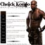

Friends
 Cheick Kongo
was born with martial arts in his blood. As a child he chose to follow in his older brother's footsteps, learning the secrets of Kendo and Karate under the master, Marc Angevin. As he grew older, he mastered Muay Thai, Kickboxing and practiced Greco-Roman Wrestling. At age 19 he discovered the Penchak Silat and was coached by Charles Joussot and Franck Roppers, both of whom realized Cheick was a unique athlete keen on writing his own history. Currently he is training Gilles and preparing him for upcoming movie projects, sports competitions and events - by far the most challenging training Gilles has ever been through.
 Kelly Frazier
Kelly Frazier
believes film can be one of the most powerful forms of communication in the world today and, through her position as President and Executive Producer of Wildcatter Films, helps transform that potential into reality. A master at toeing the line between creative execution and financial facts, Kelly makes the most of a budget while keeping the atmosphere on set playful and fun. Her motto is: "Do it well or don’t do it at all." She also dabbles in the restaurant business with two successful launches and a third on the way in 2010, bringing to mind her second motto: "Life is too short to have a bad meal!"
Donal Logue
who is famous for his role as Jimmy the cab driver on MTV promos, is nothing like the greasy, typical Boston cabby he portrays. Raised in El Centro, California, he was ASB president at his local high school, and went on to attend Harvard University. Although he had always considered himself a writer, his interest in theater was sparked at Harvard.
 Jenny Lesser
Jenny Lesser
is a native Angelino who, since childhood, has had a passionate love affair with the world of high fashion. With a successful career in the industry for over 15 years, she has worked with top designers including Herve Leger, BCBG, Max Azria, Galina Sobolev, Catherine Malandrino and Kym Gold. Jenny has cultivated a rich background of retail managerial experience in all aspects of fashion, including the buying, styling, merchandising, producing and marketing fields as well as hosting numerous events in celebrity dressing. She is a phenomenal and talented person -- a one woman show and full of life!
Fred Goudon
was born in Cannes in the south of France on June 1st 1965. He studied journalism, worked as a radio DJ and then as a press photographer. It was Fred who introduced Gilles to the world of modeling even before Gilles considered his acting career.
Hollywood United Football Club
was founded in the 1980s by a group of British expatriates who frequented the Cat & Fiddle, an English-style pub on Sunset Boulevard in the heart of Hollywood. Playing the "beautiful game" in the morning and enjoying a pint at the pub in the afternoon became the perfect way to spend Sundays in Southern California.
Ron del Barrio
invented what he calls "Passive Golf" when he won the Buena Ventura Open, shooting 10 under par for two days while sick with the flu. Dedicated to the idea that golf is not about aggression with the arms, hands and hips, but passive power using the stronger core muscles, the "Passive Golf Swing" has now gained respect throughout the industry. Deciding he was more interested in teaching than touring, Ron returned to LA and built an impressive clientele reading like a who's who of Hollywood, including Sly Stallone, Will Smith, Kevin Costner, Denzel Washington, Joe Pesci, Eddie Van Halen and Smokey Robinson. Ron offers free comprehensive web-based tutorials on his website.
The Onyx & Breezy Foundation
s a non-profit foundation which assists animals in a variety of ways, including lending financial support to fund equipment for medical facilities and much needed research; medical treatment for animals where hardship is present; organizations that benefit animals; and many more endeavors that benefit the welfare of animals. The foundation is staffed by volunteers and the founders pay all admin costs, therefore 100% of all donations are used to help the animals.